01↗
01↗光在小屋里
改变真实天窗开口，观察同一房间内的光与阴影。
THIRTY IDEAS. ONE CREATIVE SKILL.
从「大概是这样」，到「原来真的可以」。
数学、物理、生活与创作。把三十件作品放在手边。
LOCAL FIRST · 30 COMPLETE HTML WORKS · MIT
THE COMPLETE COLLECTION
所有图片来自作品实际绘制。
所有作品都可以独立打开。
每件都附有制作提示词、说明与边界。
打开一个作品，从默认方案开始，也可以换成自己的内容。
30 件作品01↗改变真实天窗开口，观察同一房间内的光与阴影。
 02↗
02↗改变转弯强度，拆开观察差速器的传动关系。
 03↗
03↗推进和旋转切面，查看连续岩层并导出矢量剖面。
 04↗
04↗捏口、推腹、查看内腔，把器形带走。
 05↗
05↗从外部晶格走到中心原子，理解近邻与边界。
 06↗
06↗调整有限圆镜，让真实反射光线抵达靶面。
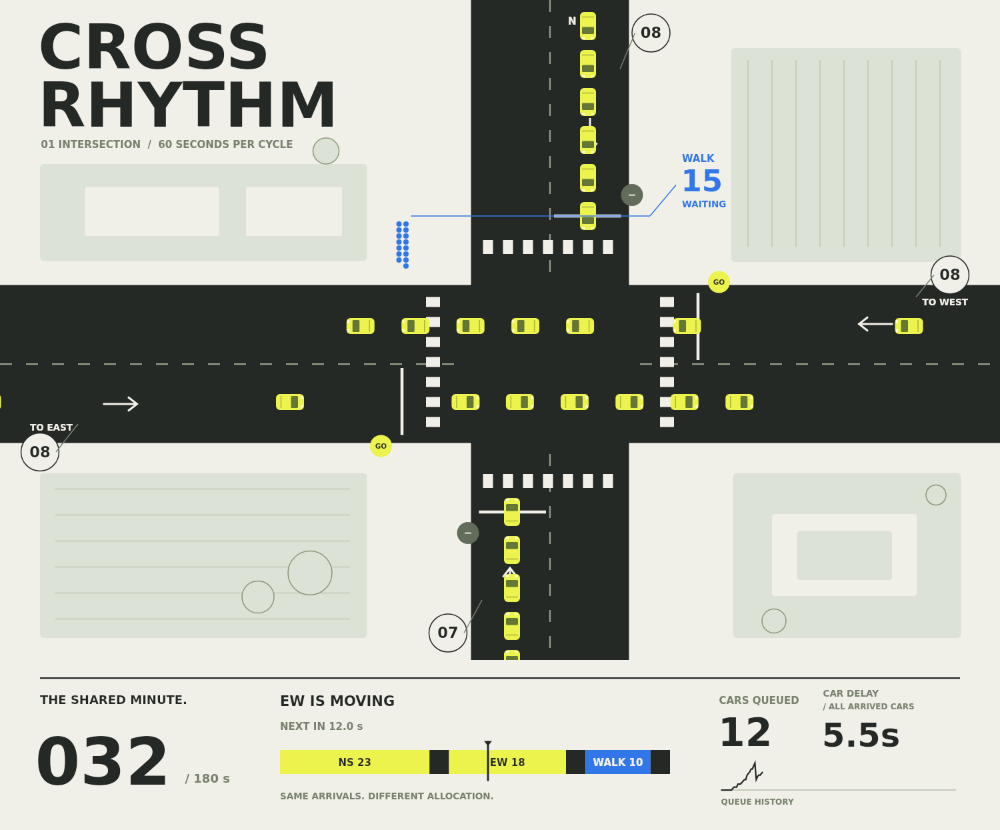
07↗改变绿灯份额，用相同到达流比较等待代价。
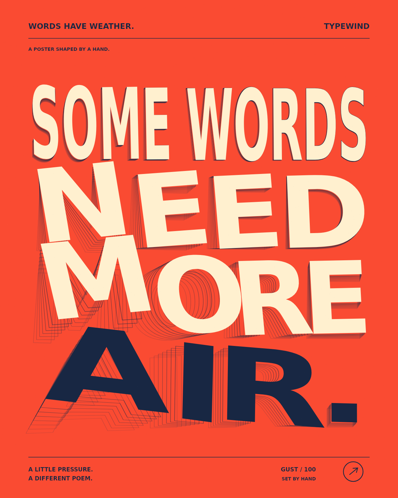
08↗把手势变成风，编辑并导出自己的动态字形海报。
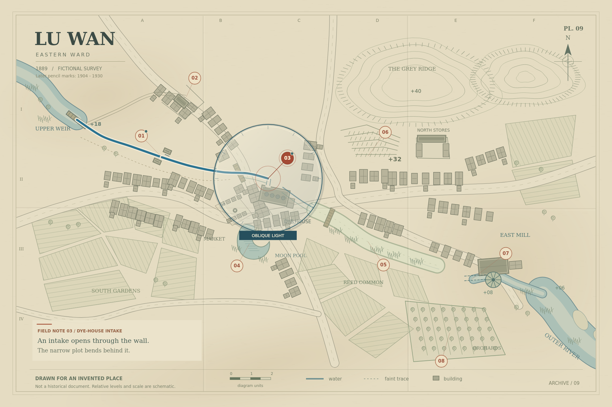
09↗勘读八处虚构档案，用证据拼回一条旧水道。
 10↗
10↗沿石路穿过拱门与小院，亲自走进去，再从原路回来。
 11↗
11↗用真实尺寸布置小店，检查位置冲突并汇总采购。
 12↗
12↗输入礼物尺寸，折起礼盒并导出毫米尺寸纸样。
 13↗
13↗设计书架、展开板件，考虑锯缝与木纹生成下料单。
 14↗
14↗布置种植箱、核算土量与株数，导出养护日历。
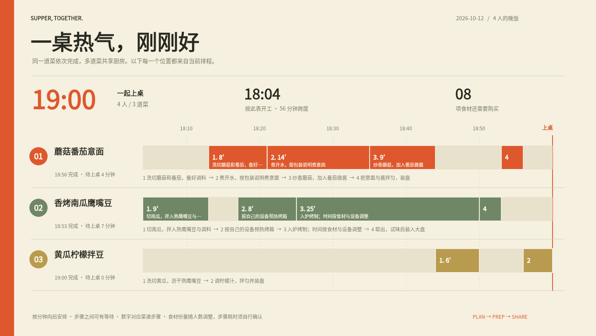
15↗从上桌时间倒排动作，把人手、设备和购物一起安排。
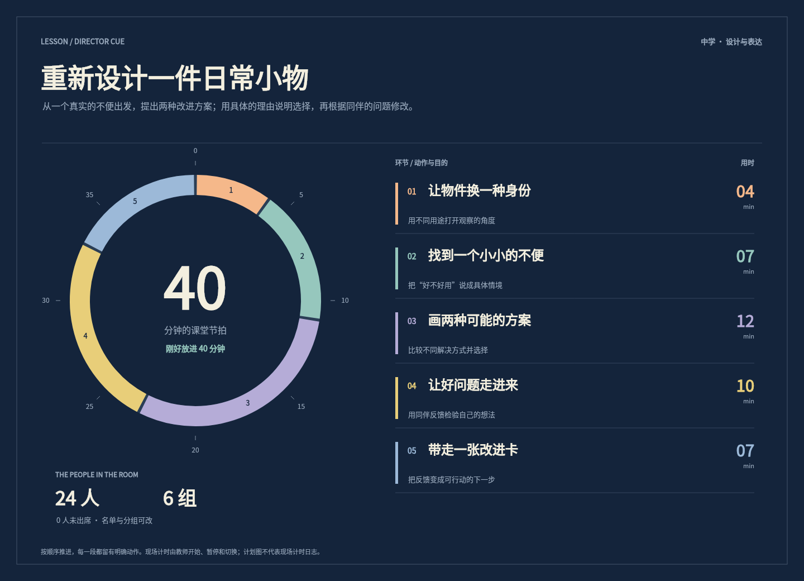
16↗编排教案、控制现场计时、处理名单与分组。
 17↗
17↗布置人物和道具，调整机位焦距，输出真实分镜接触表。
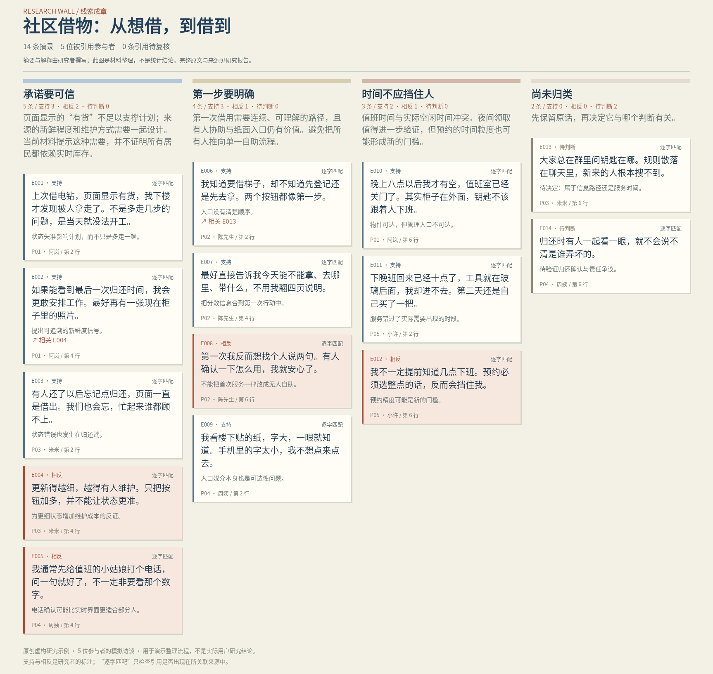
18↗从原始访谈到主题墙，让每条摘录与结论有迹可循。
 19↗
19↗用实测物品尺寸排箱，检查重叠、边界和计划总重。
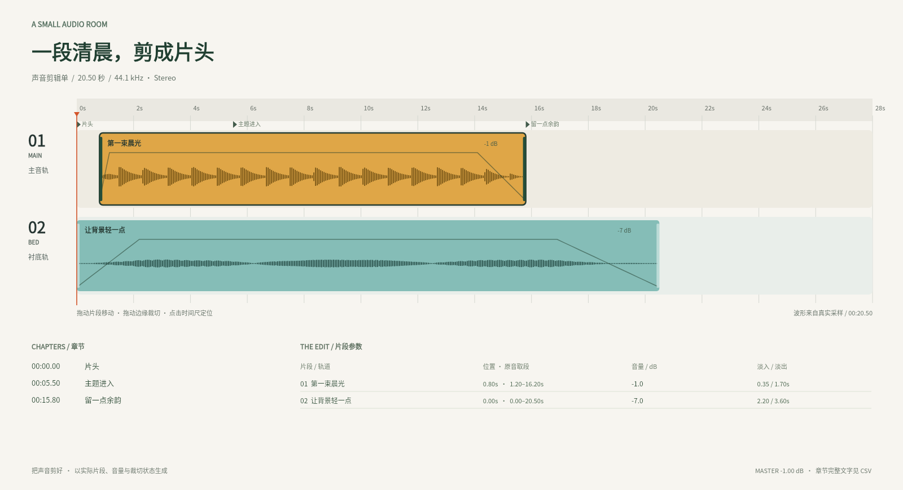
20↗导入短音频，裁切、分割、淡化与混音，导出真实 WAV。
 21↗
21↗导入自己的 CSV，比较拟合、残差与独立留出误差。
 22↗
22↗比较梯度下降、动量与 Adam，观察曲面上的真实迭代。
 23↗
23↗计算理想霍曼转移，让位置随计算时间而变化。
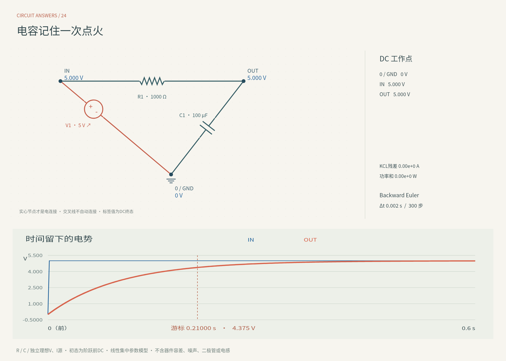
24↗编辑元件与节点，计算直流和 RC 暂态并输出结果。
 25↗
25↗导入高度格网，查看流向、汇水范围和雨量体积估算。
 26↗
26↗在球面与平面间对照路线、距离和投影变形。
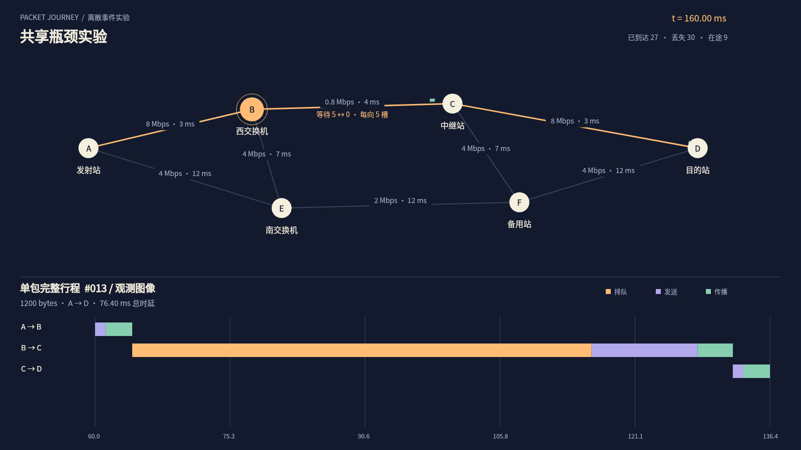
27↗搭建拓扑，改变带宽与队列，追踪包的等待、转发和丢失。
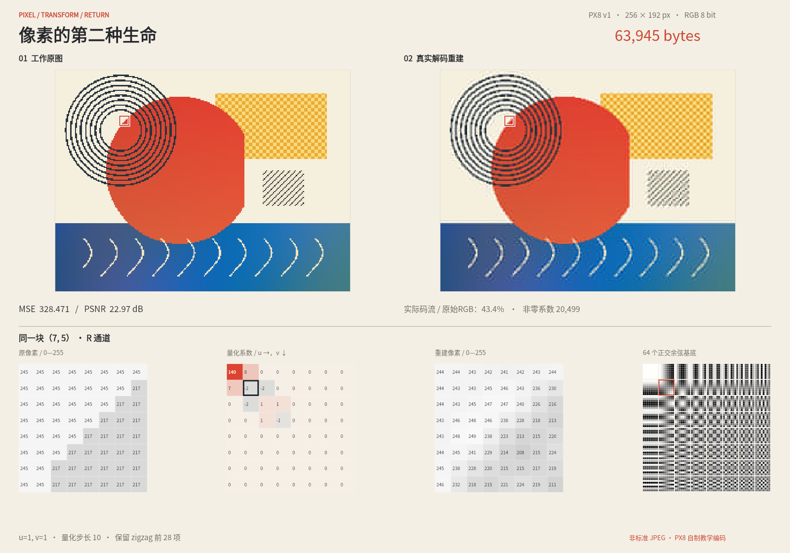
28↗导入图片，检查 DCT 与量化，导出并解码 PX8 文件。
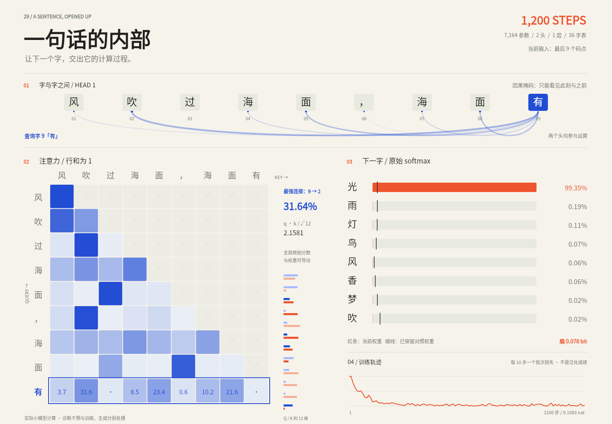
29↗在短语料上训练小型 Transformer，查看注意力并保存训练状态。
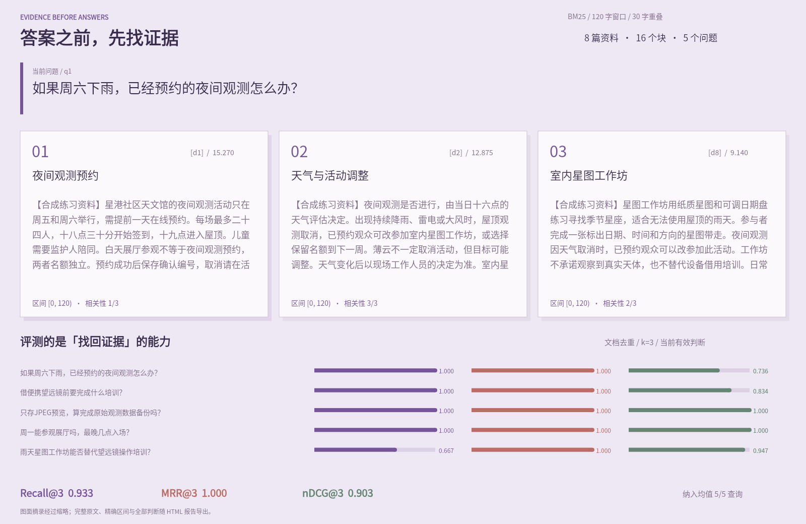
30↗用自己的资料比较 BM25 与 TF-IDF，评测检索并导出证据提示词。
没有匹配的作品，请调整搜索。